| Check | Rows | Share | Action |
|---|---|---|---|
| Accidents outside mainland France + 5 overseas departments | 3,464 | 0.26% | removed (only recorded from 2019) |
| Duplicated accident ids in characteristics | 0 | 0.00% | none |
| Extra place rows for the same accident (2023 onwards) | 47,599 | 3.44% | kept the row of the main road |
| Duplicated (accident, vehicle letter) keys before 2019 | 0 | 0.00% | none; from 2019 the unique id_vehicule is used instead |
| Duplicated (accident, vehicle letter) keys from 2019 | 54 | 0.00% | solved by joining on id_vehicule |
| Users whose vehicle is missing from the vehicle table | 22 | 0.00% | kept, vehicle variables set to missing |
| Accidents without any user | 0 | 0.00% | none |
| Accidents without a place row | 0 | 0.00% | kept, place variables missing |
| Birth year giving an age below 0 or above 105 | 395 | 0.01% | birth year set to missing |
| Users with unknown severity | 418 | 0.01% | excluded from severity analyses (mostly hit-and-run users added from 2021) |
| Invalid time of day | 0 | 0.00% | set to missing |
| Invalid calendar date | 0 | 0.00% | none |
| Mainland accidents with coordinates outside mainland France | 11 | 0.00% | coordinates set to missing |
| Speed limit outside 5-130 km/h | 248 | 0.07% | set to missing |
| Accidents where the worst severity cannot be computed | 0 | 0.00% | none |
Road accidents in France, 2005-2025
Who gets seriously hurt, where and why: data engineering, statistics and machine learning
1 Introduction and data
1.1 Context and question
France recorded 3,442 road deaths in 2025. The number fell steadily until 2013 and has barely moved since. Behind each death there are about six people hospitalised, and the share of each road user group in these casualties is very uneven.
This project asks one question:
Given that an injury accident has happened, which factors make it more likely that a person is killed or hospitalised?
The question is about severity, not about the risk of having an accident: the data only contains accidents in which at least one person was injured. Accidents with material damage only, and the traffic volumes that would give an exposure measure, are not available.
1.2 The BAAC databases
Every injury accident attended by the police produces a Bulletin d’Analyse d’Accident Corporel (BAAC). ONISR publishes them each year on data.gouv.fr as four tables linked by the accident number:
| Table | One row per | Main variables |
|---|---|---|
| Characteristics | accident | date, time, lighting, weather, built-up area, intersection, collision type, department, coordinates |
| Places | accident (main road) | road category, speed limit, surface, layout, number of lanes |
| Vehicles | vehicle involved | vehicle category, obstacle hit, impact point, manoeuvre |
| Users | person involved | role (driver, passenger, pedestrian), sex, year of birth, severity, safety equipment, trip purpose |
Severity follows the ONISR definitions: killed means died within 30 days, hospitalised means admitted for more than 24 hours, slightly injured means treated without such an admission.
After cleaning, the study covers 1,337,726 accidents and 3,005,246 people from 2005 to 2025, in mainland France and the five overseas departments.
2 Data engineering
2.1 Harmonising 21 years of files
The 84 raw files change format several times: the separator goes from , to ;, the encoding from latin1 to UTF-8, the accident key is called Accident_Id in 2022, the time is written 1930 and then 19:30, departments use three digits before 2019 (590 for Nord, 201 for Corse-du-Sud), and coordinates switch from degrees × 100,000 with 0000000 for missing values to decimal degrees. R/02_harmonise.R detects the format of each file and builds one schema with English variable names.
2.2 Quality checks
Three choices shape the rest of the analysis:
- Scope. Overseas collectivities (Polynesia, New Caledonia, Saint-Martin…) only appear from 2019 and are excluded so that the series stay comparable.
- Severity break. ONISR warns that “hospitalised” is recorded differently from 2018 and cannot be compared with earlier years: the number of hospitalised people falls by about a quarter between 2017 and 2018 while deaths barely move. All severity rates and models therefore use 2019-2025, where vehicle categories are also coded consistently.
- Several place rows per accident from 2023. One row per road at an intersection: the main road (lowest road category code) is kept.
2.3 Correct joins
Each person is linked to their own vehicle (pedestrians to the vehicle that hit them), with the unique id_vehicule from 2019 and the vehicle letter before. The first version of this project joined users and vehicles on the accident number alone, which pairs every person with every vehicle of the accident. Joining users and vehicles on the accident id alone gives 5,703,904 rows instead of 3,005,246 (+90%): every count of that version was inflated.
| Consistency test | Result |
|---|---|
| Every user kept exactly once after the joins | passed |
| Every accident kept exactly once | passed |
| Users per accident match n_users | passed |
| Killed users match the accident totals | passed |
| All users have a mode | passed |
| Ages within 0-105 | passed |
2.4 New variables
Age and age group, period of the day, weekday, vehicle groups mapped across the two vehicle nomenclatures, the person’s mode (their vehicle, or pedestrian), the heaviest other party in the accident, the use of a belt or helmet (from 2019), speed-limit classes, and the target severe = killed or hospitalised.
3 Exploratory analysis
3.1 Over time
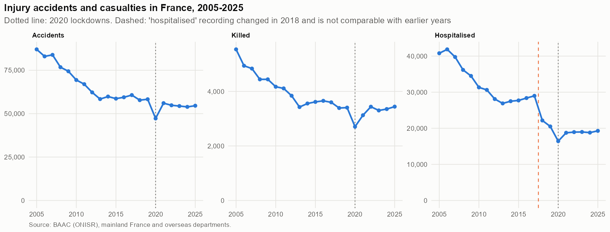
Deaths fell from 5,543 in 2005 to 3,427 in 2013 (-38%), then stayed between 3,100 and 3,700 apart from the 2020 lockdowns (2,706). There were 3,442 deaths in 2025.
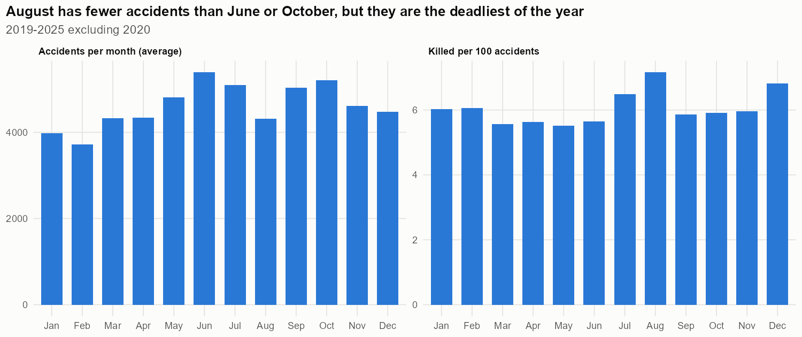
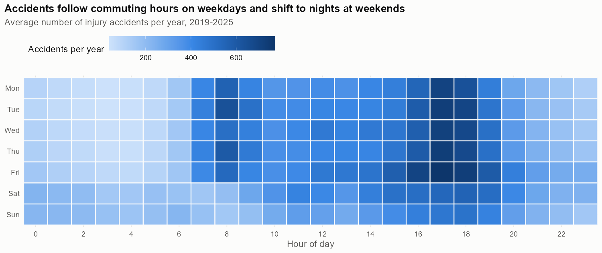
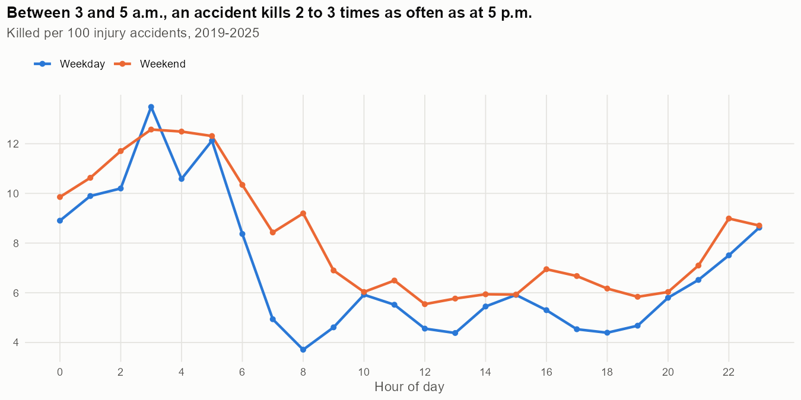
Accidents follow commuting hours on weekdays and shift to nights at weekends. Night accidents are far fewer but much deadlier.
3.2 Conditions, roads and vehicles
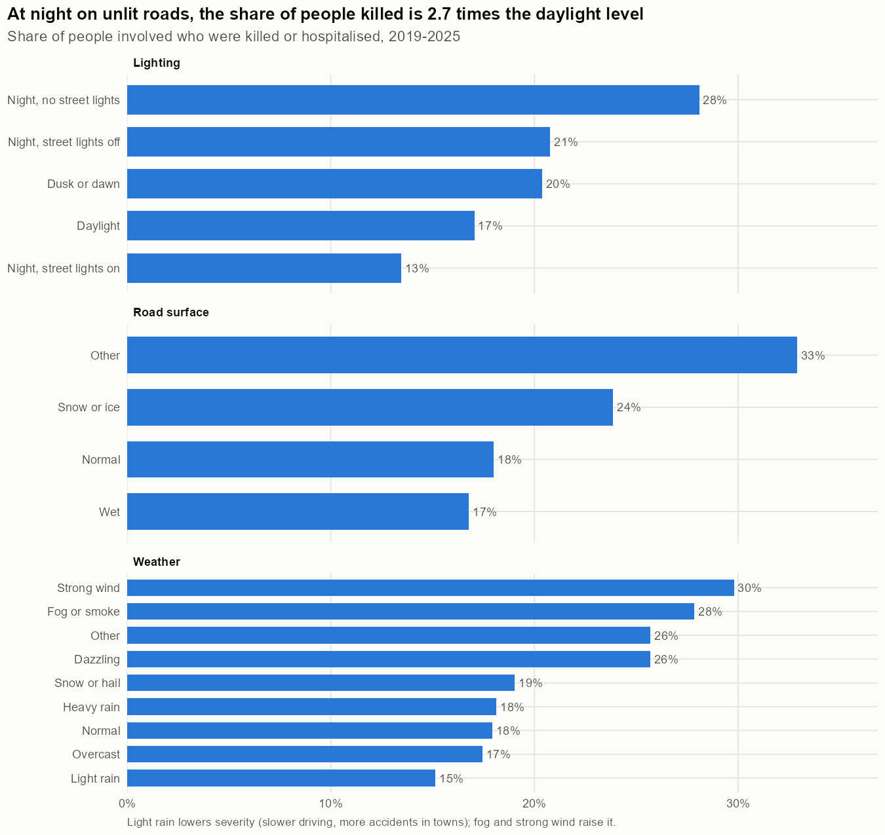
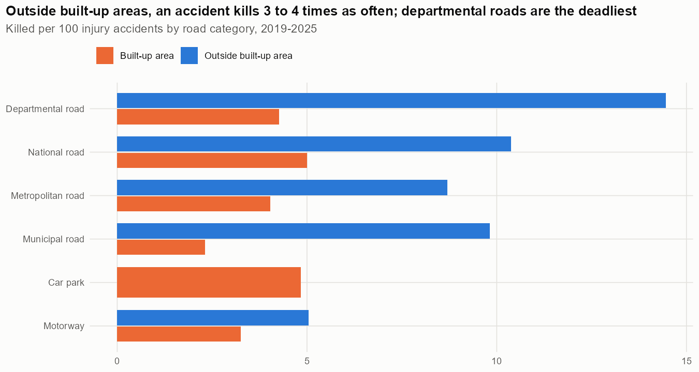
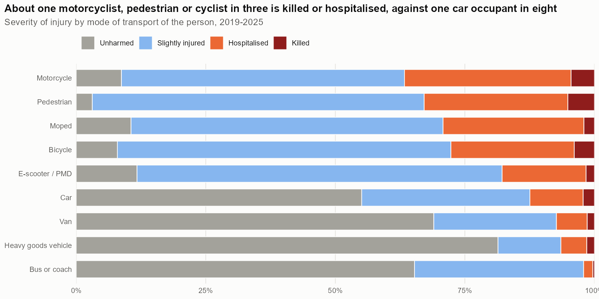
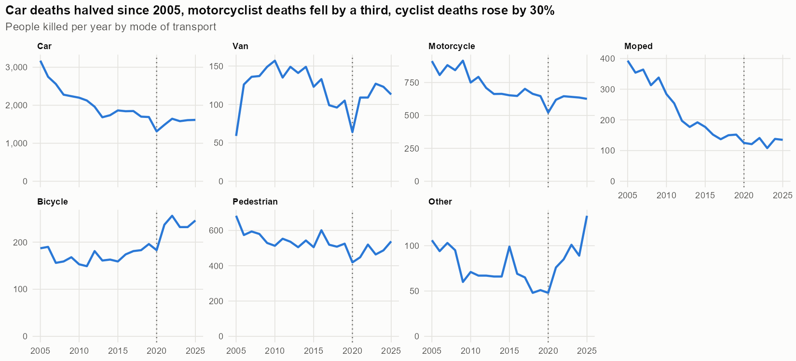
Between 2019 and 2025, 37% of motorcyclists, 33% of pedestrians and 28% of cyclists involved in an accident were killed or hospitalised, against 12.5% of car occupants.
3.3 Who is involved
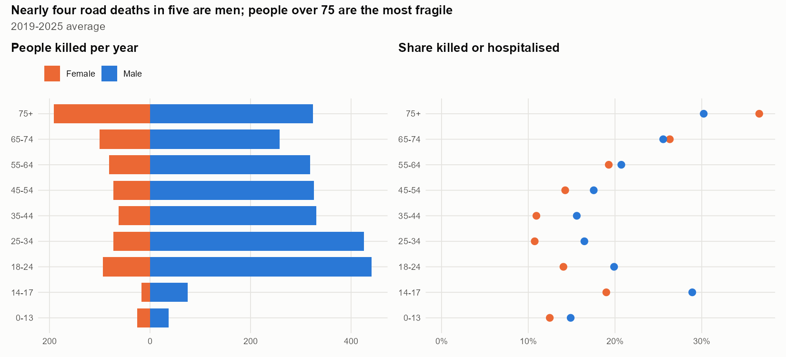
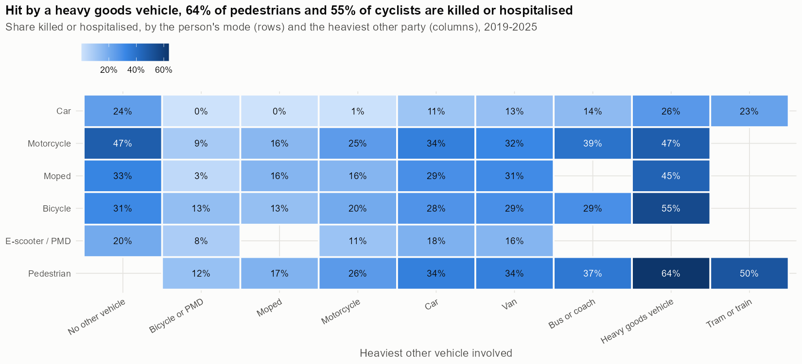
4 Geography
Counts mostly reflect population, so every map shows a rate. Over 2021-2025, deaths per million inhabitants range from 14 in Hauts-de-Seine to 115 in Haute-Marne, and deaths per 100 accidents from 0.8 in Paris to 17.6 in Haute-Marne.
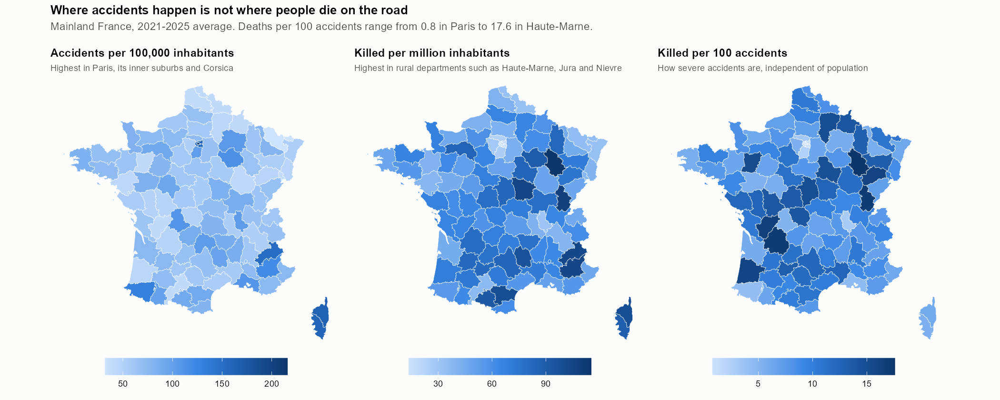
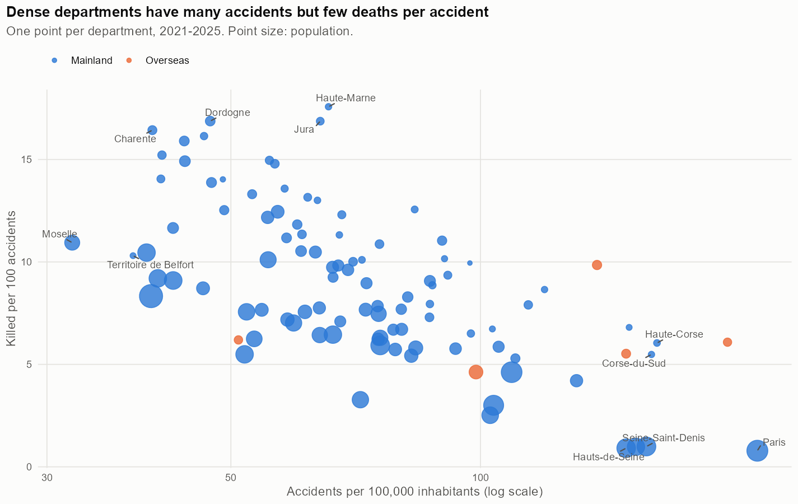
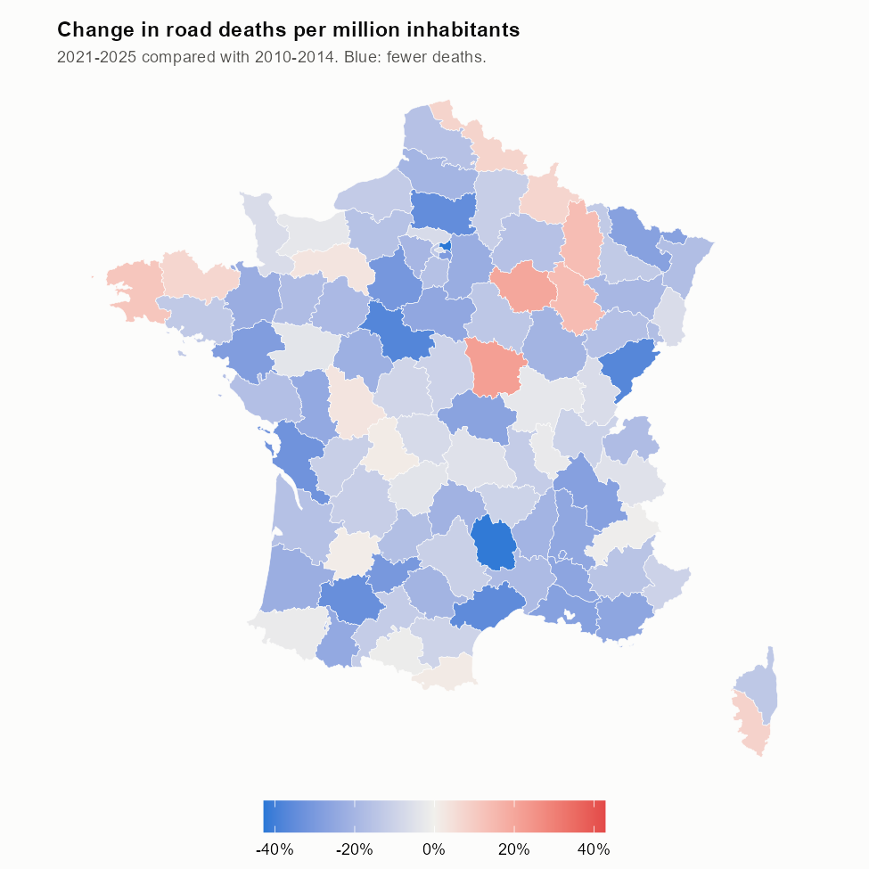
The interactive map shows the department rates and every fatal accident of 2025.
5 Statistical model: logistic regression
5.1 Specification
\[\text{logit}\, P(\text{severe}_i = 1) = \alpha_{t} + \sum_k \beta_k x_{ik}\]
for each person \(i\) involved in an accident in 2019-2025, with year fixed effects \(\alpha_t\) and only variables known before the impact: mode, passenger, sex, age group, belt or helmet, heaviest other party, road category, built-up area, speed limit, intersection, lighting, weather, surface, time of day, weekend, overseas. Collision type, obstacle and impact point describe the crash itself and are left out on purpose.
People in the same accident share the road, the speed and the impact, so they are not independent. Standard errors are clustered by accident; they are in median 11% wider than the naive ones.
5.2 Results
The model is estimated on 841,052 people. In-sample ROC-AUC is 0.829 and McFadden’s pseudo-R² 0.238.
| Factor | Odds ratio [95% CI] |
|---|---|
| Pedestrian (vs car occupant) | 10.03 [9.77-10.30] |
| Motorcyclist (vs car occupant) | 6.49 [6.35-6.63] |
| Cyclist (vs car occupant) | 4.02 [3.89-4.15] |
| Belt or helmet not worn (vs worn) | 4.30 [4.13-4.47] |
| Aged 75+ (vs 35-44) | 3.29 [3.19-3.39] |
| Other party: heavy goods vehicle (vs car) | 2.69 [2.59-2.79] |
| No other vehicle (vs car) | 1.94 [1.91-1.98] |
| Outside built-up area | 2.51 [2.44-2.58] |
| Speed limit 130 (vs 40-50) | 4.88 [4.57-5.21] |
| Motorway (vs municipal road) | 0.28 [0.27-0.30] |
| Night, 22h-6h (vs 10h-16h) | 1.56 [1.51-1.61] |
| Night without street lights (vs daylight) | 1.23 [1.20-1.27] |
| Man (vs woman) | 1.05 [1.03-1.06] |
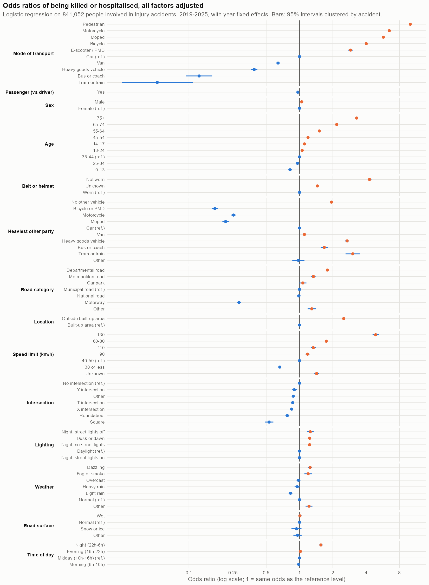
Two raw contrasts shrink once the other factors are held equal. Unlit roads at night multiplied the share of people killed by 2.7 in the descriptive analysis; their odds ratio is 1.23 [1.20-1.27], because most of that effect came from night-time and rural roads. Men make up nearly four deaths in five, but once involved in the same kind of accident they are barely more likely to be seriously hurt (1.05 [1.03-1.06]): the gap comes from exposure and behaviour, not from the outcome of a given crash.
Correlated variables must be read together: the 130 km/h limit has a high odds ratio but only occurs on motorways, whose own odds ratio is low.
5.3 Interactions
| Interaction | Wald statistic | df | p-value |
|---|---|---|---|
| Mode x built-up area | 44.4 | 9 | <2e-16 |
| Age x pedestrian | 28.4 | 8 | <2e-16 |
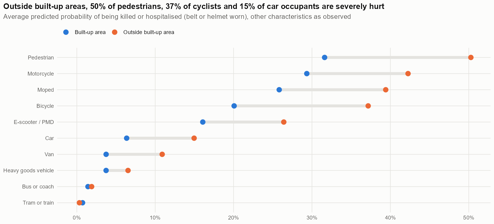
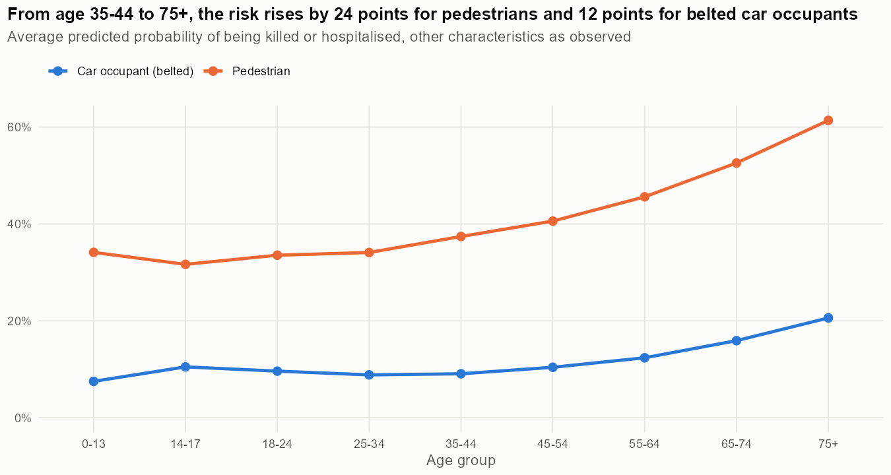
Probabilities are averaged over the observed population (each person given the level in turn), which is easier to read than interaction coefficients.
6 Machine learning
6.1 Set-up
- Same population and target as the logistic regression.
- Chronological split: train 2019-2022, validation 2023 (tuning, early stopping, decision thresholds), test 2024-2025. The final models are refitted on 2019-2023 with the tuned settings. A random split would mix years and hide any drift.
- Models: a prevalence baseline, a “rate by mode” baseline, penalised logistic regression (glmnet; alpha and lambda chosen on the 2023 log loss), random forest (ranger, probability forest) and XGBoost (early stopping on 2023).
- Two feature sets: pre-impact variables only, and pre-impact plus crash variables (collision type, obstacle, impact point, manoeuvre).
| Model | Features | Setting | ROC-AUC | PR-AUC | Log loss |
|---|---|---|---|---|---|
| Baseline: prevalence | - | - | 0.5000 | 0.1795 | 0.4742 |
| Baseline: mode rate | - | - | 0.6644 | 0.2983 | 0.4436 |
| Penalised logistic | pre | alpha=0.0 lambda=0.0075 | 0.8258 | 0.5115 | 0.3647 |
| Penalised logistic | pre | alpha=0.5 lambda=0.00065 | 0.8260 | 0.5120 | 0.3642 |
| Penalised logistic | pre | alpha=1.0 lambda=0.00041 | 0.8260 | 0.5120 | 0.3641 |
| Penalised logistic | crash | alpha=1.0 lambda=0.00013 | 0.8457 | 0.5420 | 0.3485 |
| Random forest | pre | mtry=4 min.node.size=50 | 0.8430 | 0.5474 | 0.3495 |
| Random forest | pre | mtry=4 min.node.size=300 | 0.8407 | 0.5407 | 0.3521 |
| Random forest | pre | mtry=7 min.node.size=50 | 0.8423 | 0.5465 | 0.3518 |
| Random forest | pre | mtry=7 min.node.size=300 | 0.8413 | 0.5414 | 0.3508 |
| XGBoost | pre | max_depth=4 rounds=2332 | 0.8466 | 0.5534 | 0.3462 |
| XGBoost | pre | max_depth=6 rounds=858 | 0.8467 | 0.5535 | 0.3461 |
| XGBoost | pre | max_depth=8 rounds=484 | 0.8468 | 0.5539 | 0.3461 |
| XGBoost | crash | max_depth=8 rounds=610 | 0.8693 | 0.5933 | 0.3252 |
| Model | Chosen setting |
|---|---|
| Penalised logistic | alpha=1.0, lambda=0.00041, 64 non-zero coefficients |
| Random forest | mtry=4, min.node.size=50, 300 trees |
| XGBoost | max_depth=8, eta=0.05, 484 rounds |
7 Evaluation and interpretability
7.1 Performance on 2024-2025
| Model | ROC-AUC [95% CI] | PR-AUC [95% CI] | Log loss | Brier |
|---|---|---|---|---|
| Baseline: prevalence | 0.500 [0.500-0.500] | 0.183 [0.181-0.186] | 0.4764 | 0.1497 |
| Baseline: rate by mode | 0.669 [0.666-0.673] | 0.308 [0.304-0.312] | 0.4440 | 0.1395 |
| Penalised logistic | 0.825 [0.823-0.827] | 0.516 [0.511-0.520] | 0.3657 | 0.1159 |
| Random forest | 0.843 [0.841-0.844] | 0.548 [0.542-0.552] | 0.3510 | 0.1114 |
| XGBoost | 0.846 [0.844-0.848] | 0.555 [0.550-0.559] | 0.3478 | 0.1106 |
| Penalised logistic + crash variables | 0.846 [0.844-0.848] | 0.546 [0.541-0.551] | 0.3497 | 0.1113 |
| XGBoost + crash variables | 0.869 [0.867-0.871] | 0.600 [0.595-0.605] | 0.3259 | 0.1042 |
| Comparison | Difference | 95% interval |
|---|---|---|
| XGBoost - logistic, ROC-AUC | 0.0205 | [0.0196, 0.0215] |
| XGBoost - logistic, PR-AUC | 0.0395 | [0.0367, 0.0423] |
| XGBoost - random forest, ROC-AUC | 0.0034 | [0.0028, 0.0040] |
| XGBoost + crash - XGBoost, ROC-AUC | 0.0234 | [0.0224, 0.0245] |
XGBoost ranks people best (ROC-AUC 0.846), ahead of the random forest (0.843) and the penalised logistic regression (0.825). The gain over the logistic regression is small but certain (paired bootstrap interval above zero). Adding the crash variables raises XGBoost to 0.869, which shows how much of the outcome is decided by the crash itself.
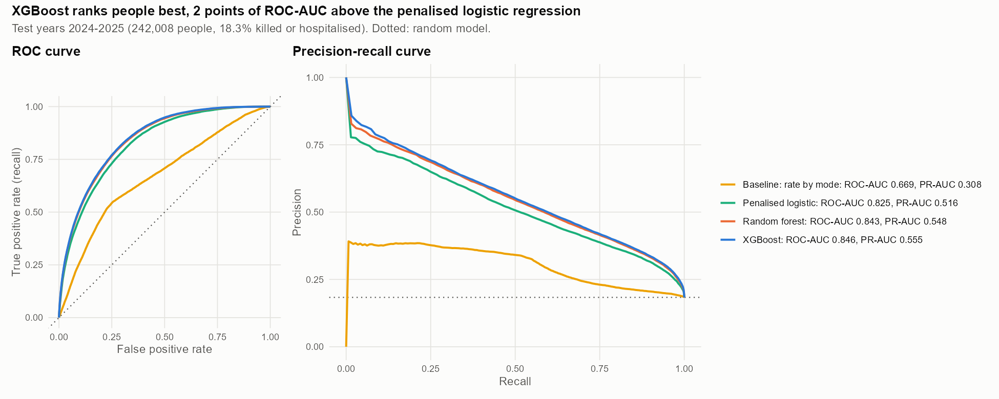
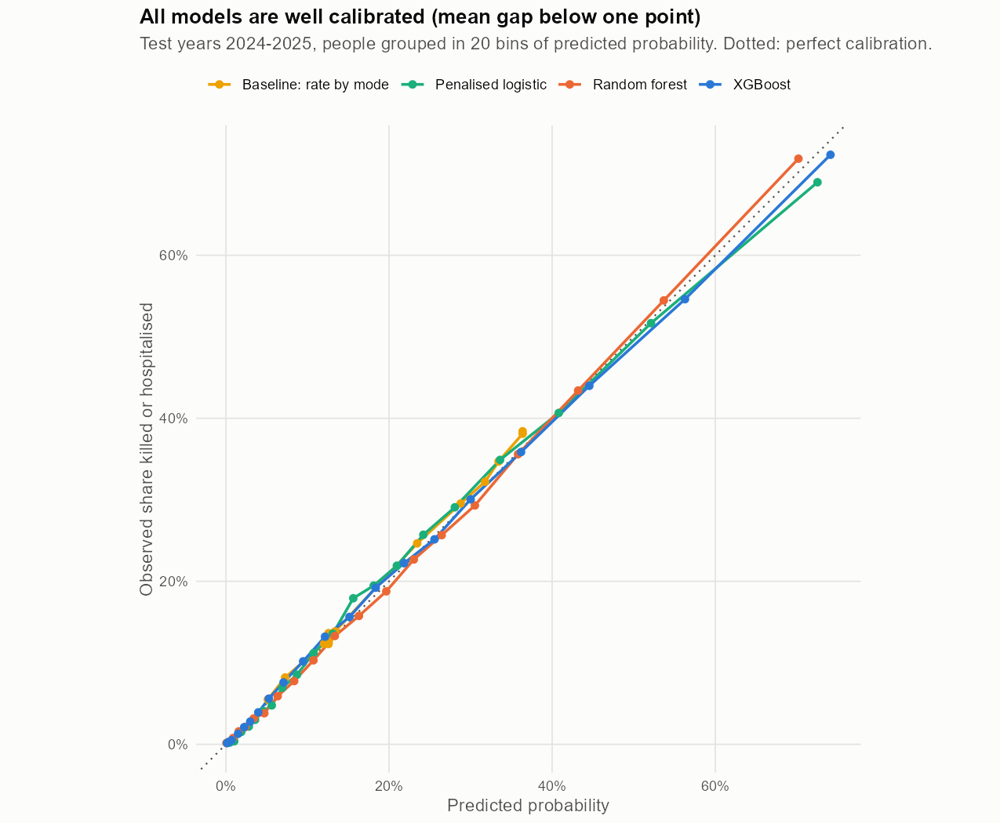
7.2 Decisions and errors
| Model | Threshold | Precision | Recall | F1 | Share flagged |
|---|---|---|---|---|---|
| Baseline: rate by mode | 0.158 | 32.5% | 54.9% | 0.409 | 31.0% |
| Penalised logistic | 0.260 | 45.0% | 61.5% | 0.520 | 25.0% |
| Random forest | 0.287 | 47.2% | 63.5% | 0.541 | 24.6% |
| XGBoost | 0.274 | 47.2% | 64.9% | 0.546 | 25.2% |
| Penalised logistic + crash variables | 0.261 | 46.0% | 67.2% | 0.546 | 26.8% |
| XGBoost + crash variables | 0.292 | 50.0% | 68.4% | 0.578 | 25.1% |
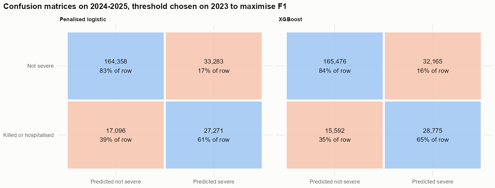
| Mode | Severe cases | Missed by XGBoost |
|---|---|---|
| Car | 18,257 | 43% |
| Motorcycle | 10,195 | 20% |
| Pedestrian | 6,179 | 28% |
| Bicycle | 3,304 | 29% |
| Moped | 3,264 | 30% |
| E-scooter / PMD | 1,431 | 67% |
| Van | 1,302 | 52% |
| Heavy goods vehicle | 336 | 51% |
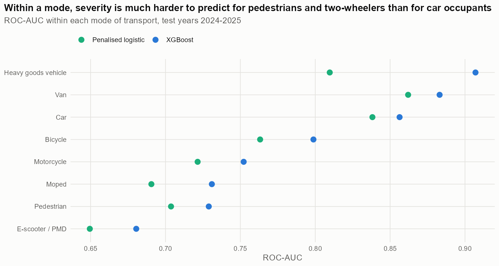
The global ROC-AUC is partly carried by the differences between modes. Within a mode the task is much harder: ROC-AUC is 0.86 for car occupants but 0.73 for pedestrians and 0.68 for e-scooter riders. Performance is stable across the two test years (0.847 in 2024, 0.844 in 2025).
7.3 What the model uses
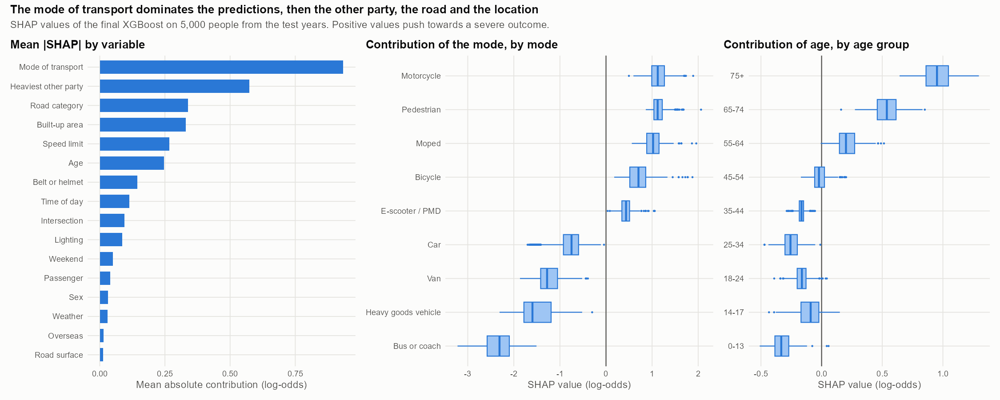
SHAP values computed on the final XGBoost rank the mode of transport first, then the heaviest other party, the road and the location. The belt-or-helmet variable has one of the largest odds ratios but a modest mean SHAP value: not wearing one is rare (a few percent of people), so it matters a lot for few people. SHAP importance measures how much a variable moves predictions across the population, not the size of its effect for the people it concerns.
8 Dashboard
The interactive dashboard (Quarto, Observable JS) filters every figure by years, department and mode of transport, maps deaths per inhabitant and per accident, and summarises the models. It is a static page: it needs no server and can be published on GitHub Pages.
9 Discussion and conclusion
9.1 Main results
- The mode of transport decides most of the outcome. Pedestrians, motorcyclists and cyclists are many times more likely than car occupants to be killed or hospitalised in the same situation.
- The other party and the place come next. Being hit by a heavy goods vehicle, being outside built-up areas, on departmental roads, at night, and being old all raise the risk. Not wearing a belt or helmet multiplies the odds by about four.
- Some intuitions do not survive adjustment. Darkness and sex matter much less than raw rates suggest.
- Geography is about road type, not population. Dense departments have many accidents but few deaths per accident; rural departments the opposite.
9.2 Statistics and machine learning
The logistic regression and XGBoost agree on what matters. The regression gives effects with confidence intervals and is easy to explain; XGBoost predicts better (about two points of ROC-AUC, four of PR-AUC) because it captures interactions without specifying them. Both are well calibrated. For a public-health message the regression is the better tool; for ranking cases, XGBoost.
9.3 Limits
- Selection. Only injury accidents are recorded, so nothing here measures the risk of an accident or the effect of a factor on accident frequency.
- No exposure data. Without kilometres travelled per mode, the number of deaths per mode cannot be turned into a risk per kilometre.
- Recording. “Hospitalised” changed in 2018; equipment use may be checked more carefully when someone is badly hurt; hit-and-run users from 2021 lack information.
- Model scope. Variables are coarse (no speed driven, alcohol or drugs, which the open data hides for privacy), so within-mode prediction stays limited.
- Causality. Odds ratios are associations adjusted for the other variables, not causal effects.
9.4 Perspectives
Adding exposure data (traffic counts, mobility surveys) to estimate risks per kilometre; modelling the full ordinal severity scale; a mixed model with department random effects; using the 2025 coordinates to study dangerous road sections; and updating the pipeline each year when ONISR publishes new data.